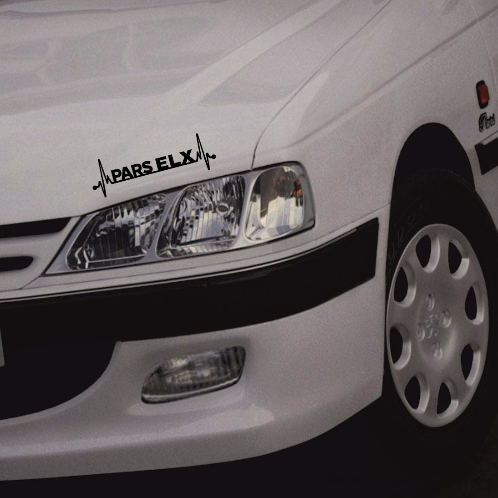
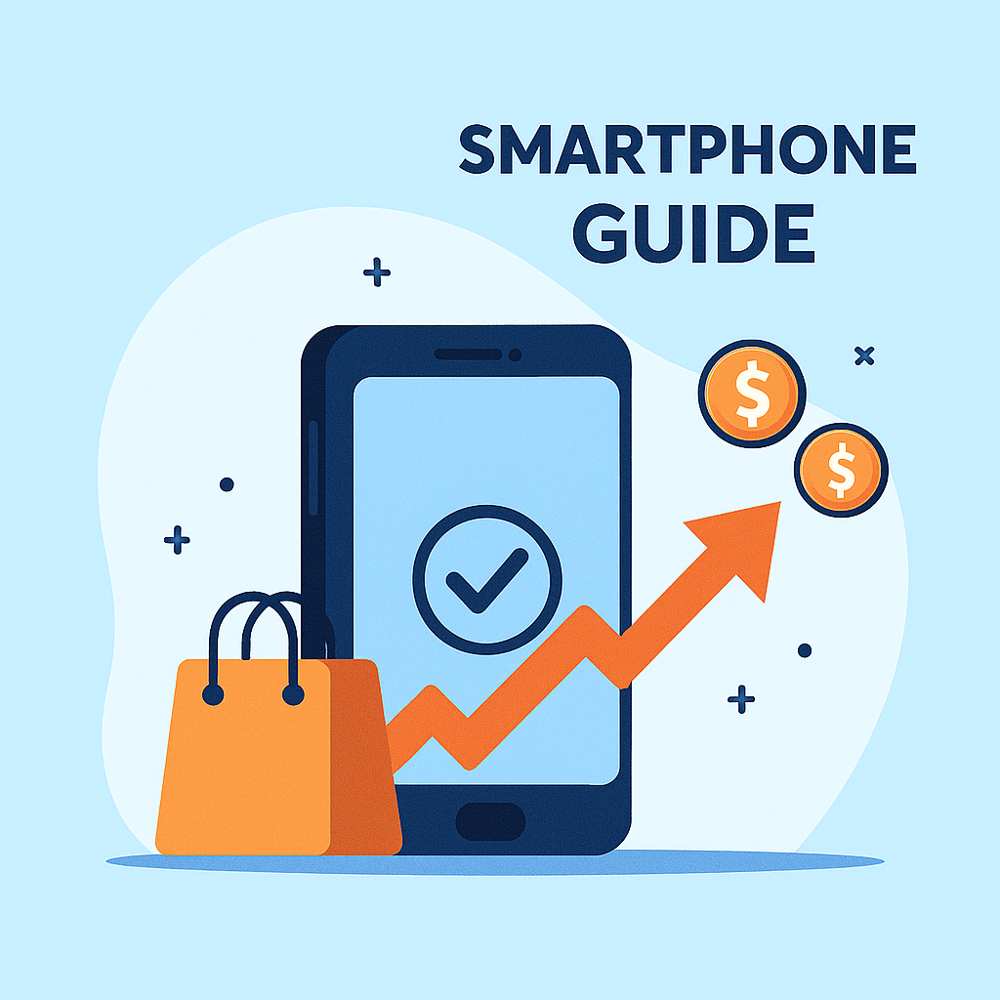

APhone
کاربر گرامی خوش آمدید
APhone
کاربر گرامی خوش آمدید
راهنمای خرید موبایل --- 24 مهر 1404 --- مطالعه 30 دقیقه

Abolfazl Ghasiry

در مقالهی پیش رو با در نظر گرفتن پارامترهای تأثیرگذار بر تجربهی کاربر، بهترین گوشیهای بازار ایران را در بازههای قیمتی مختلف معرفی میکنیم.
با توجه به افزایش بیسابقه و افسارگسیختهی قیمت گوشی در چند سال گذشته در بازار ایران، این دستگاه مهم که بخش بزرگی از زندگی ما محسوب میشود، به کالایی لوکس تبدیل شده است؛ پس هنگام خرید گوشی جدید، باید بیش از گذشته وسواس به خرج بدهیم و مدلی را انتخاب کنیم که بیشترین امکانات و بهترین تجربه را با قیمت مدنظر ارائه میدهد.
بهطور کلی برای خرید گوشی هوشمند، گذشته از کیفیت ساخت و طراحی ظاهری که در حس و تجربهی استفاده از گوشی و مقاومت آن در برابر ضربات و فشار نقش مهمی دارد، باید به موارد زیر توجه داشت:
در مقالهی پیش رو، میخواهیم بهترین گوشیهای هوشمند را در بازههای قیمتی مختلف معرفی کنیم تا
بتوانید براساس بودجهی مدنظرتان، بهترین گوشی ممکن را بخرید؛ از بهترین گوشیهای زیر ۱۰ میلیون تومان (گوشیهای
اقتصادی) تا بهترین گوشیهای بالای ۸۰ میلیون تومان (گوشیهای پرچمدار).
توجه کنید همهی قیمتهای نوشتهشده براساس کمترین قیمت بازار برای مدل رجیسترشده
است. افزونبراین با توجه به تغییر زیاد قیمت در ایران، این مقاله هر ماه و طبق قیمت روز گوشی در بازار
کشور، بهروز میشود
متاسفانه بهعلت افزایش نرخ ارز، گوشی هوشمند کارآمدی که بتوان با بودجه زیر ۵ میلیون تومان خریداری کرد وجود ندارد. در این بازه قیمتی تعداد محدودی از گوشیهای هوشمند قدیمی یا از برندهای متفرقه دردسترس هستند ولی خرید آنها را بهشما توصیه نکرده و پیشنهاد میکنیم با افزایش بودجه سراغ گزینههای بهتر بروید.

** Redmi A5
ردمی A5 ادامهدهنده راه محصولات اقتصادی سری A شیائومی است که نمایشگر بزرگتر ۶٫۸۸ اینچی IPS با نرخ نوسازی ۱۲۰ هرتز و وضوح HD دارد. بدنه از پلاستیک مقاوم ساخته شده و وزن آن حدود ۱۹۳ گرم است، طوری که با وجود نمایشگر بزرگ، گوشی راحت در دست جای میگیرد.
تراشهی Unisoc T7250 همراه با ۴ یا ۶ گیگابایت رم LPDDR4X و ۱۲۸ یا ۲۵۶ گیگابایت حافظهی ذخیرهسازی قابل ارتقا با microSD، کارهای روزمره مثل اجرای شبکههای اجتماعی یا وبگردی را بهراحتی انجام میدهد. گوشی شیائومی ردمی A5 4G بهعنوان یک گوشی ارزان قیمت با باتری خوب از یک باتری حجیم ۵۲۰۰ میلیآمپرساعتی بهره میبرد که در استفادههای معمول روزانه، بهراحتی بیش از یک روز کاربر را همراهی میکند. بهعلاوه، پشتیبانی از شارژ سریع ۱۸ واتی و وجود شارژر سازگار درون جعبه، از دیگر نکات مثبت این گوشی بهشمار میروند.
بررسی این گوشی
** موتو E15 موتورولا
موتو E15 از محصولات اقتصادی جدید موتورولا با مشخصاتی بسیار ارزنده با توجه بهرده قیمتی خود است. این گوشی شاید از معدود مدلهای بازار باشد که از دوربین سلفی پانچ هول بهجای ناچ قطرهای استفاده میکند، بنابراین در بین ارزانترین گوشیهای بازار، ظاهر مدرن و بهروزتری دارد. خود گوشی نیز از نظر کیفیت ساخت و متریال بهکار رفته میتواند نظر بسیاری از افراد را جلب کند. بهخصوص اینکه مانند محصولات بالارده، قابی با پوشش چرم مصنوعی برای محافظت از پشت گوشی استفاده کرده است.
گوشی با توجه بهابعاد ۶٫۶۷ اینچیاش، ۱۸۸ گرم وزن دارد که وزن سبکی برای این اندازه بهحساب میآید. دو مورد از قابلتوجهترین و جذابترین امکانات این گوشی، اسپیکرهای استریو و باتری ۵۲۰۰ میلیآمپرساعتی هستند. عملکرد پردازشی تراشهی Helio G81 Extreme نیز برای استفادهی روزمره و کار با اپلیکیشنهای پراستفاده از جمله پیامرسانها، مرورگرها و شبکههای اجتماعی کفایت میکند اما ضعف بزرگ این گوشی در رم دو گیگابایتیاش است که ممکن است عملکرد دستگاه در خصوص چند وظیفگی و جابجایی بین برنامهها را با مشکل روبرو کند، هرچند که موتورولا برای سبککردن ظرفیت اشغالشده رم، نسخهی سبکتر اندروید ۱۴ موسوم به Android Go را روی گوشی نصب کرده است.
بررسی این گوشی
** گلکسی A07 سامسونگ
گلکسی A07 از یک نمایشگر ۶.۷ اینچی PLS LCD با نرخ نوسازی ۹۰ هرتز بهره میبرد که تجربه روانتری نسبت به نسلهای قبلی ارائه میدهد. بدنه آن از پلاستیک ساخته شده اما طراحی مینیمال و وزن سبک (حدود ۱۸۴ گرم) باعث میشود خوشدست باشد. در بخش سختافزار، سامسونگ از پردازنده مدیاتک Helio G99 استفاده کرده که برای کارهای روزمره و حتی برخی بازیهای سبک عملکرد قابل قبولی دارد. این گوشی در چند نسخه حافظه (از ۶۴ گیگابایت با ۴ گیگابایت رم تا ۲۵۶ گیگابایت با ۸ گیگابایت رم) عرضه میشود و از اندروید ۱۵ همراه با رابط کاربری One UI 7 بهره میبرد.
از نظر باتری، A07 به یک باتری ۵۰۰۰ میلیآمپرساعتی مجهز است که شارژدهی مناسبی برای استفاده روزانه فراهم میکند. دوربین اصلی آن کیفیتی در حد گوشیهای اقتصادی دارد و برای عکاسی روزمره کافی است، هرچند نباید انتظار کیفیت پرچمدارها را داشت. در مجموع، گلکسی A07 با ترکیب قیمت مناسب، نمایشگر روان و باتری قدرتمند، انتخابی خوب برای کسانی است که به دنبال یک گوشی ساده و کاربردی هستند، اما در زمینه قدرت پردازشی و کیفیت دوربین محدودیتهایی دارد.
بررسی این گوشی
** سامسونگ A16
گوشی سامسونگ گلکسی A16 یک مدل اقتصادی جدید از سری A است که در سال ۲۰۲۴ معرفی شد. این گوشی در واقع نسخه بهبود یافته A15 محسوب میشود و با نمایشگر بزرگتر، طراحی باریکتر و سختافزار قویتر عرضه شده است.
گلکسی A16 از یک نمایشگر ۶.۷ اینچی Super AMOLED با رزولوشن +FHD و نرخ نوسازی ۹۰ هرتز بهره میبرد که کیفیت تصویر و روانی خوبی برای یک گوشی اقتصادی ارائه میدهد. در بخش سختافزار، پردازنده مدیاتک Helio G99 Ultra به همراه اندروید ۱۴ و رابط کاربری One UI 6 تجربهای روان در کارهای روزمره و حتی برخی بازیها فراهم میکند. همچنین باتری ۵۰۰۰ میلیآمپرساعتی با شارژدهی مناسب و پشتیبانی نرمافزاری طولانیمدت (تا ۶ سال آپدیت) از نقاط قوت اصلی این گوشی هستند. با این حال، بدنه پلاستیکی و کیفیت متوسط دوربینها نشان میدهد که A16 همچنان در دسته گوشیهای اقتصادی باقی میماند و برای کاربرانی مناسب است که به دنبال قیمت مناسب، نمایشگر خوب و پشتیبانی نرمافزاری طولانی هستند.
بررسی این گوشی
** نوت 14s
گوشی ردمی نوت 14S شیائومی یک میانرده اقتصادی است که بین مدل استاندارد و نسخه پرو قرار میگیرد. این گوشی در واقع ترکیبی از ویژگیهای هر دو مدل است و برای کسانی طراحی شده که نمیخواهند هزینه بالای نسخه پرو را بپردازند اما امکانات بیشتری نسبت به مدل پایه میخواهند.
ردمی نوت 14S از یک نمایشگر ۶.۶۷ اینچی AMOLED با نرخ نوسازی ۱۲۰ هرتز بهره میبرد که کیفیت تصویر و روانی بالایی ارائه میدهد. پردازنده آن مدیاتک Helio G99 Ultra است که برای کارهای روزمره و حتی برخی بازیها عملکرد خوبی دارد. همچنین باتری ۵۰۰۰ میلیآمپرساعتی با پشتیبانی از شارژ سریع ۳۳ واتی، دوربین اصلی ۱۰۸ مگاپیکسلی و اندروید ۱۴ با رابط کاربری MIUI 15 از دیگر مشخصات مهم این گوشی هستند. در مجموع، نوت 14S با قیمت حدود ۲۴۰ تا ۲۶۰ یورو ارزش خرید بالایی در رده میانردهها دارد و انتخابی مناسب برای کسانی است که به دنبال نمایشگر باکیفیت، دوربین قدرتمند و باتری خوب در یک گوشی اقتصادی هستند.
بررسی این گوشیخلاصه :
| رنج قیمت | شیائومی | سامسونگ | سایر برندها |
|---|---|---|---|
| 5 میلیون | ---- | ---- | ---- |
| 10 میلیون | Redmi A5 | A07 | Moto E15 |
| 15 میلیون | Note 14s | A16 | Nokia X30 5G |
| 20 میلیون | Note 14 pro | ---- | CM phone 1 |
| 25 میلیون | Note 14 pro | A26 | ریلمی 12 پلاس |
| 30 میلیون | Poco x7 | A36 | ---- |
| 40 میلیون | Poco x7 pro | A56 | آنر 200 |
| 50 میلیون | ---- | S24 FE | ---- |
| 70 میلیون | Xiaomi 14T pro | S25 FE | ---- |
| 80 میلیون | ---- | ---- | آنر 400 پرو |
| 100 میلیون | Xiaomi 15 | ---- | Iphone 16 |
| بالای 100 میلیون | Xiaomi 15 ultra | S25 ultra | وان پلاس 13 |
 ریجیستر کردن گوشی در ایران 1404
ریجیستر کردن گوشی در ایران 1404
 راه اندازی گوشی سامسونگ به صورت مرحله به مرحله
راه اندازی گوشی سامسونگ به صورت مرحله به مرحله
 آموزش راه اندازی آیفون
آموزش راه اندازی آیفون
 چطور گوشی شیائومی را برای اولین بار راه اندازی کنیم؟
چطور گوشی شیائومی را برای اولین بار راه اندازی کنیم؟
 روش های انتقال فایل از گوشی قدیمی به گوشی جدید
روش های انتقال فایل از گوشی قدیمی به گوشی جدید
ارسال نظر :
سایر مقالات :


بهترین گوشی گیمینگ شیائومی
بهترین گوشی شیائومی از نظر باتری
بهترین گوشی گیمینگ
بهترین ایرپادها
جهت ارتباط با ما با ادمین ما در تلگرام صحبت کنید.----- درباره ما